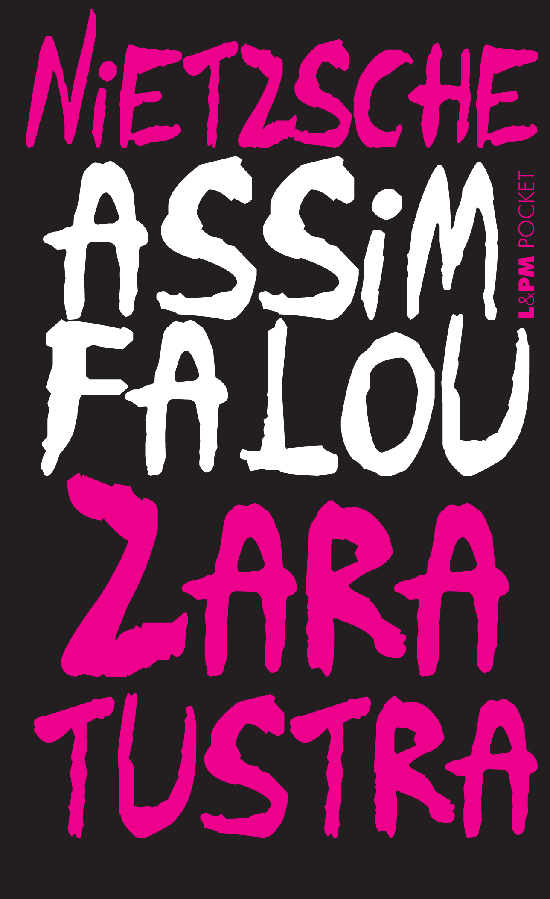
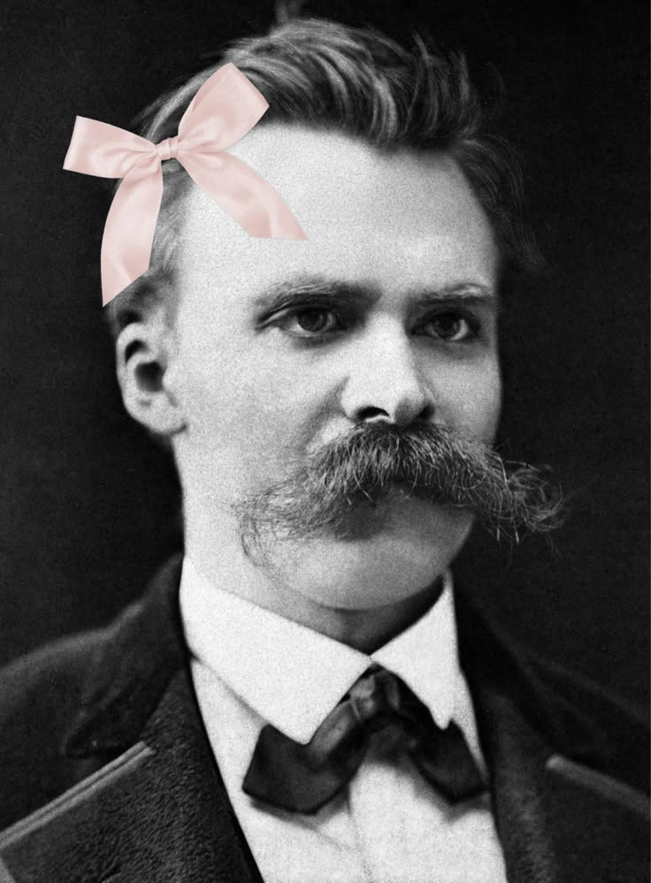
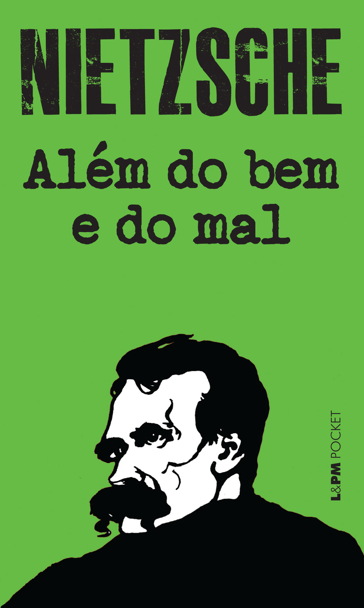
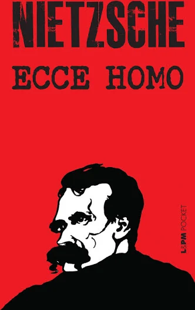

Assim Falou Zaratustra

Obra filosófica e literária em que aparecem ideias como superação, criação de valores e crítica ao rebanho.
Friedrich Nietzsche
Uma home-page dedicada ao filósofo que questionou a moral, desmontou certezas e transformou pensamento em confronto.
Explorar obras
Friedrich Nietzsche foi um filósofo alemão conhecido por suas críticas à moral tradicional, à religião e às verdades aceitas sem reflexão. Seu pensamento influenciou filosofia, psicologia, literatura e cultura.

Obra filosófica e literária em que aparecem ideias como superação, criação de valores e crítica ao rebanho.

Um ataque direto às certezas morais prontas e aos sistemas que fingem neutralidade.

Texto provocador em que Nietzsche apresenta a si mesmo, sua obra e seu modo de pensar. Nietzsche interpretando a si mesmo.